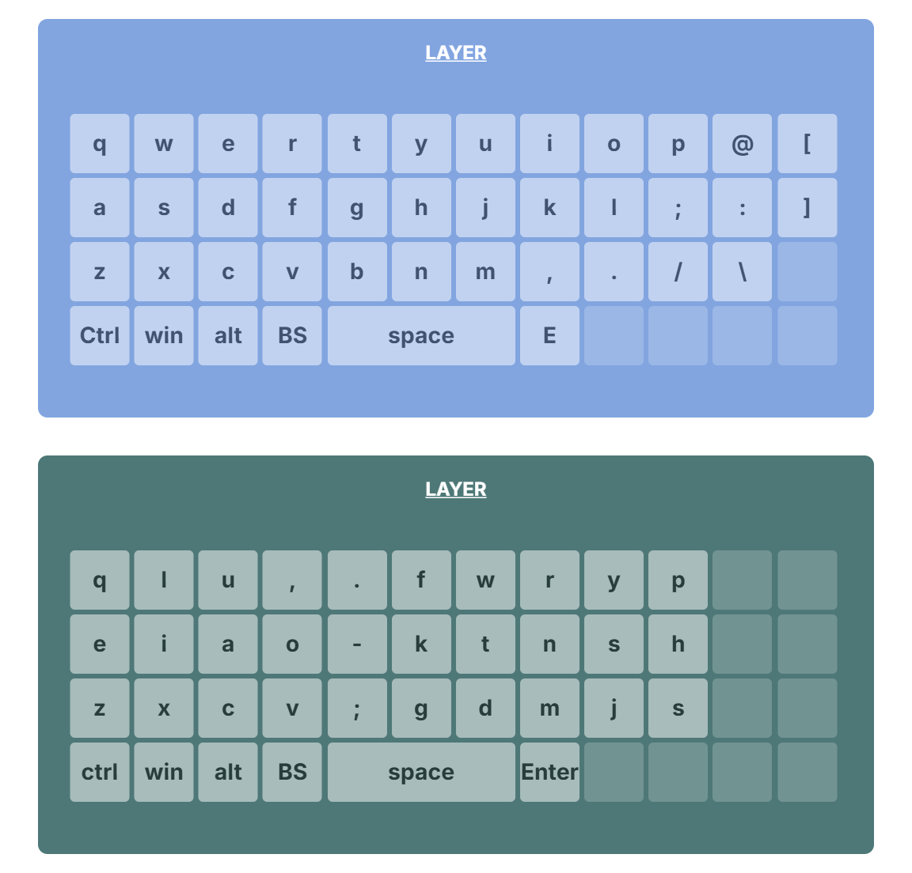

１つ目はキーボードのボタンの位置を変えるという方法です。

皆さんのキーボードはボタンが斜めに配置されていますが、別に必ずそうである必要はありません。
キーボードをカスタムしたいな、と思っていたのですが、キーマップをカスタムできるようなキーボードって高いので敬遠してました。
でも、ありました。(比較すれば)安くて、結構カスタマイズできるキーボードを。
ええ、わかります。一体キーボードをカスタムする意味とは？という疑問が頭に浮かぶことでしょう。 そもそも現在タッチタイピング(旧ブラインドタッチ)ができる人にとっては、今更配置を変えたら、今まで覚えたものがパーじゃないかと。 そういう人はこちらから
キーボードっておもに2つの手段でカスタムすることができます。
１つ目はキーボードのボタンの位置を変えるという方法です。
皆さんのキーボードはボタンが斜めに配置されていますが、別に必ずそうである必要はありません。
キーボードの配置を変えられるので、もちろん覚えやすいように配置することもできます。
例えば母音aiueoを固めておいたり、普通の音と濁音（半濁音）を上下に並べておいたりすれば、

（引用 大西拓磨 https://o24.works/layout/ より）
まだ覚えてない人or覚えられない人にはその凄さがわかると思います。
お待たせしました。タッチタイピングをマスターしている人への利点を説明します。
別に既に覚えたアルファベットのキーを変更する必要はありません。
むしろキーマップを改善することで、重要なのに離れた位置にいる
#include <stdio.h>
#include <stdlib.h>
#include <time.h>
int main() {
int answer;
int guess;
int attempts = 0;
int maxAttempts = 10;
srand((unsigned int)time(NULL));
answer = rand() % 100 + 1;
while (1) {
printf("Enter your guess (1-100): ");
if (scanf("%d", &guess) != 1) {
while (getchar() != '\n');
continue;
}
attempts++;
if (guess < 1 || guess > 100) {
printf("Out of range.\n");
continue;
}
if (guess < answer) {
printf("Too low.\n");
} else if (guess > answer) {
printf("Too high.\n");
} else {
printf("Correct! You guessed it in %d attempts.\n", attempts);
break;
}
if (attempts >= maxAttempts) {
printf("Too many attempts. The answer was %d.\n", answer);
break;
}
}
printf("Game over.\n");
return 0;
}
他にも様々なショートカットを登録することもできます。
覚えさせる気があるのかわからないようなショートカットやよく使うくせに無駄に複雑な
ショートカットを即座に打つことができるようになります。
例えば、「タブを左右に移動」はCtrl+Tab (+Shift)ですが、最大3つも同時押しさせるとかナンセンスですし、
そもそも左側に集中しすぎていて左手をホームポジションから移動させる必要があります。
でもキーを再配置したり、階層建てにすることで、スムーズにタブを切り替えることができます。 少なくともわざわざマウスに手を伸ばさなくても良くなります。
なにより、「これ便利やん！」ってその時覚えてて、いざ使うとき忘れてるもんなんや・・・
ということを防げます。
| 名前 | メリット | デメリット |
|---|---|---|
| リマップ対応製品 | セキュリティーのリスクなし | 有料 |
| PowerToys | Microsoft公式アプリ | レイヤーが使えない |
| AutoHotKey | 何でもできる | 他と比べてセキュリティーのリスクあり |
おまけ
iphoneとwindowsの連携の提案
windowsからonedriveにアクセスできるように、iCloudにもアクセスできます。
そこで、私が提案したいのはwindowsのクリップボードをiCloudにアップロードすることで、iPhoneとの連携を強化してみませんか？
例えば、windows /iPhoneにしか保存していないパスワード /画像・動画 /PDF /そしてテキストをもう一方に送りたいときにどうしていますか？
もっともメジャーなのはgmailに下書きとして保存したり、あるいはlineやディスコードに送ってみたりするかもしれません。
でも、セキュリティー上の不安があったり、いちいちアプリやソフトを開くのはめんどくさくないですか？
iPhoneにはショートカットという公式アプリを使用することで、簡単にiCloudに保存できます。
Windowsにはexeファイルを利用することで、iCloudに保存することができます。
こうすることで、異なるOS間のコピペーストがある程度簡単になります。
DL